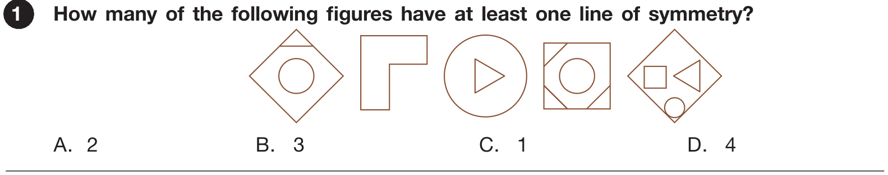
How many of the following figures have at least one line of symmetry?
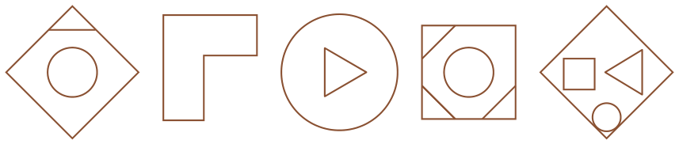
2
3
1
4
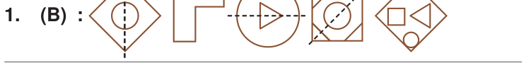
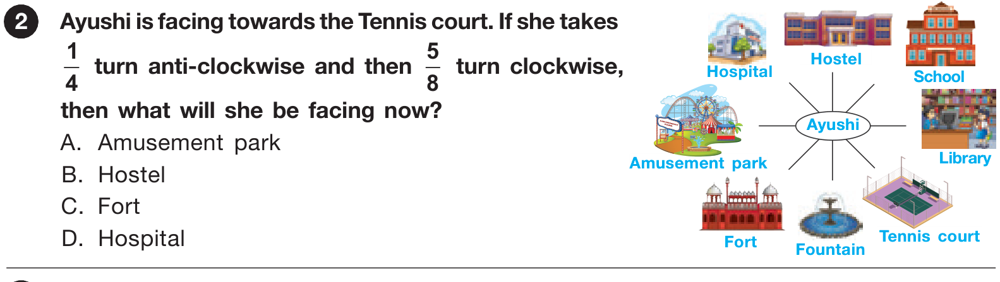
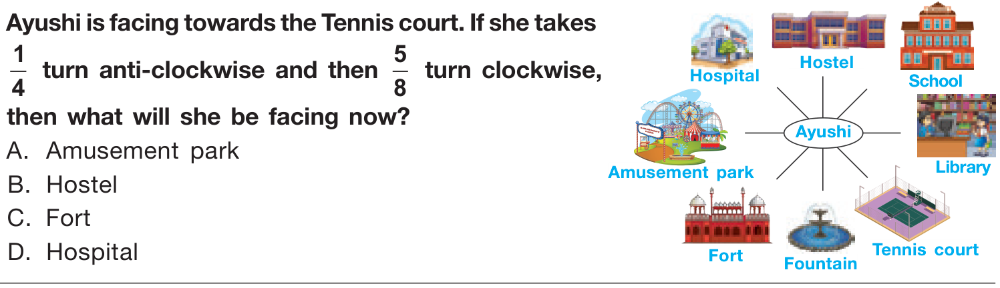
Option A
Option B
Option C
Option D
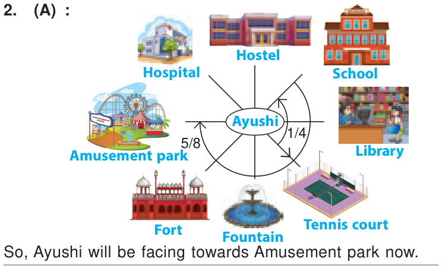
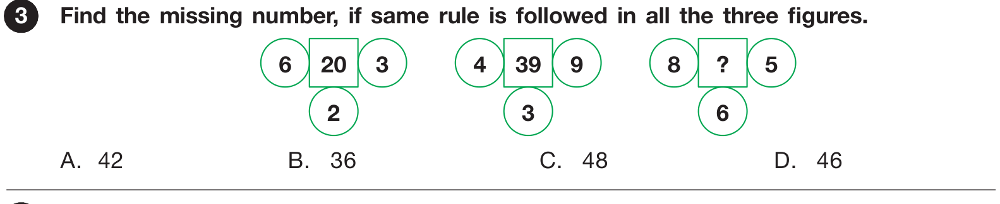
Find the missing number, if same rule is followed in all the three figures.
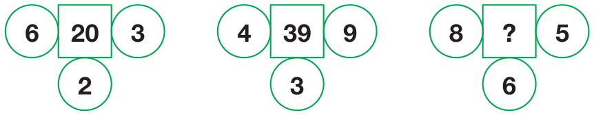
42
36
48
46
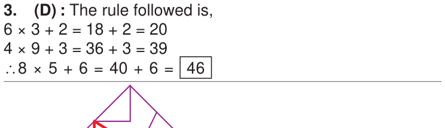
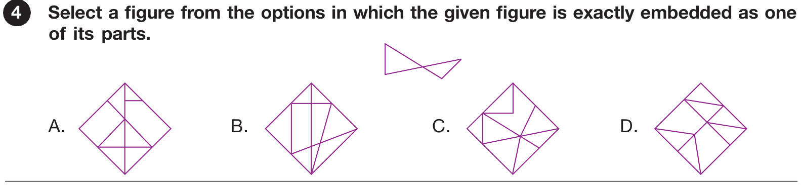
Select a figure from the options in which the given figure is exactly embedded as one of its parts.
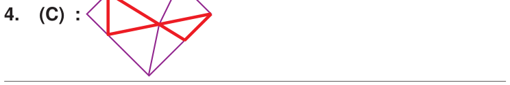
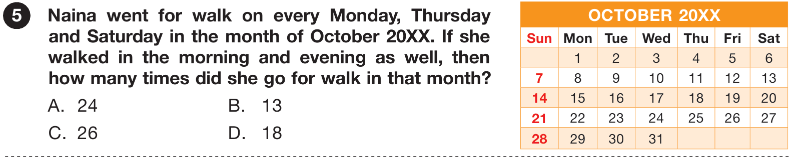
Naina went for walk on every Monday, Thursday and Saturday in the month of October 20XX. If she walked in the morning and evening as well, then how many times did she go for walk in that month?
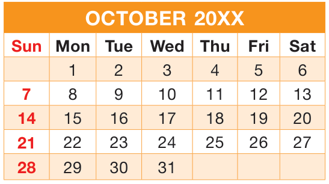
24
13
26
18
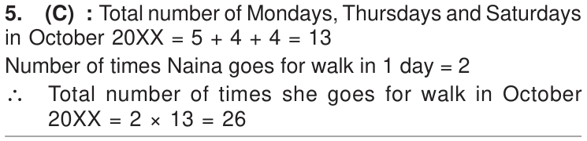
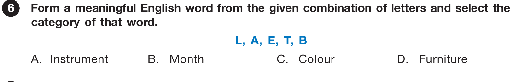
Form a meaningful English word from the given combination of letters and select the category of that word.
L, A, E, T, B
Instrument
Month
Colour
Furniture
The word formed is TABLE which comes in the category of furniture.
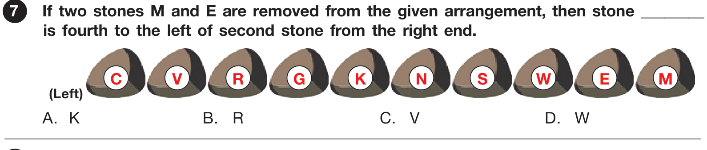
If two stones M and E are removed from the given arrangement, then stone ________ is fourth to the left of second stone from the right end.
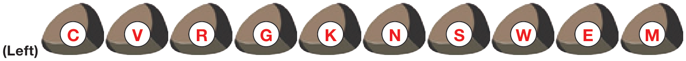
K
R
V
W
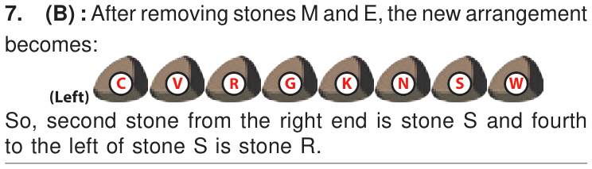
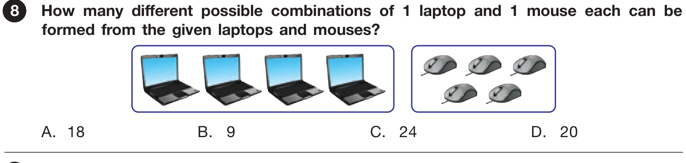
How many different possible combinations of 1 laptop and 1 mouse each can be formed from the given laptops and mouses?
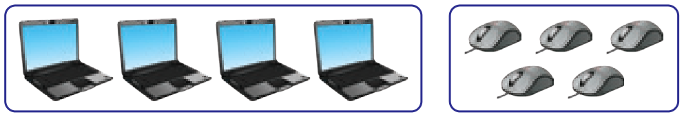
18
9
24
20
Number of laptops = 4
Number of mouses = 5
So, number of possible combinations = 4 × 5 = 20
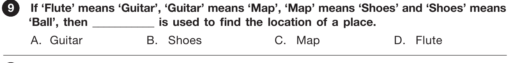
If ‘Flute’ means ‘Guitar’, ‘Guitar’ means ‘Map’, ‘Map’ means ‘Shoes’ and ‘Shoes’ means ‘Ball’, then ___________ is used to find the location of a place.
Guitar
Shoes
Map
Flute
We use Map to find the location of a place but Guitar means Map.
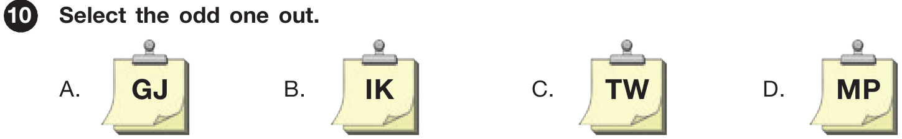
Select the odd one out.
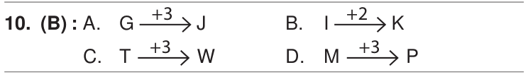
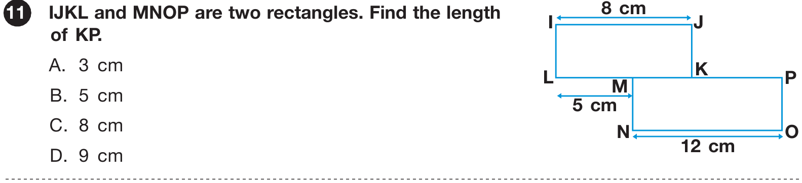
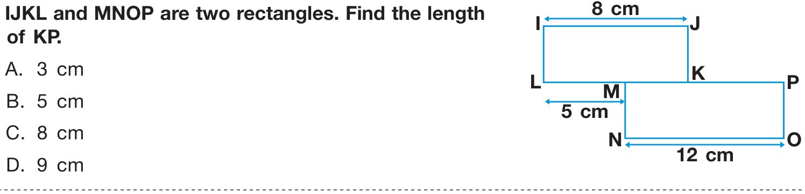
Option A
Option B
Option C
Option D
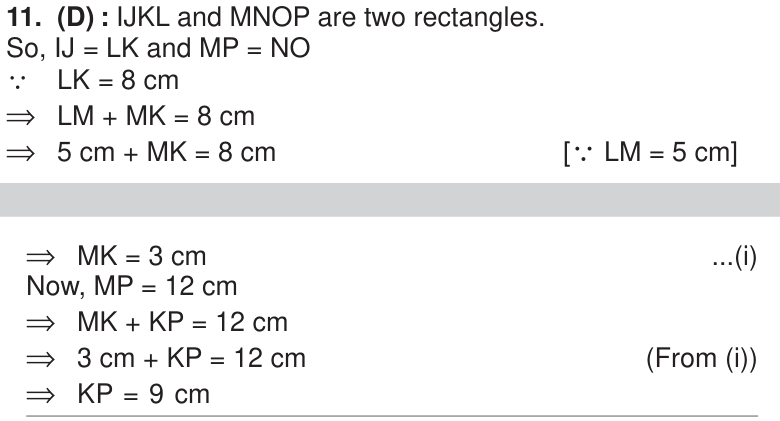
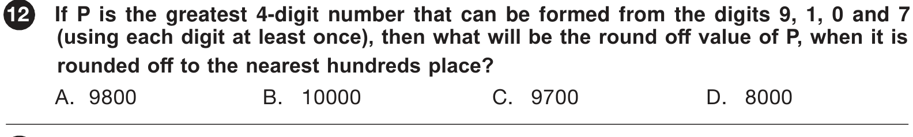
If P is the greatest 4-digit number that can be formed from the digits 9, 1, 0 and 7 (using each digit at least once), then what will be the round off value of P, when it is rounded off to the nearest hundreds place?
9800
10000
9700
8000
Greatest 4-digit number that can be formed from the given digits = 9710
P = 9710
So, 9710 when rounded off to nearest hundreds gives 9700.
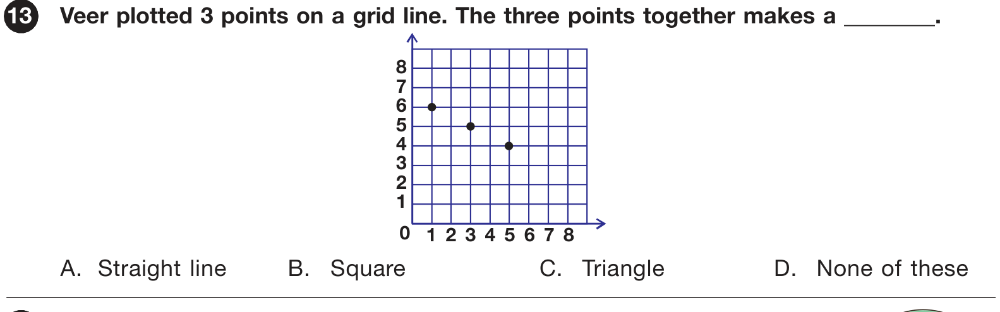
Veer plotted 3 points on a grid line. The three points together makes a ________.
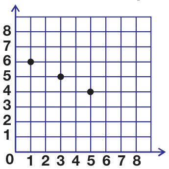
Straight line
Square
Triangle
None of these
The three points together make a straight line.
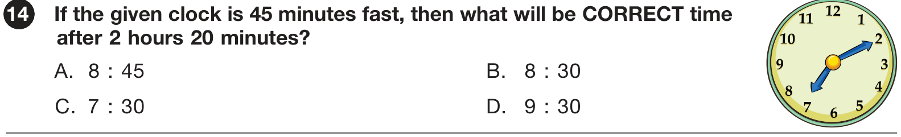
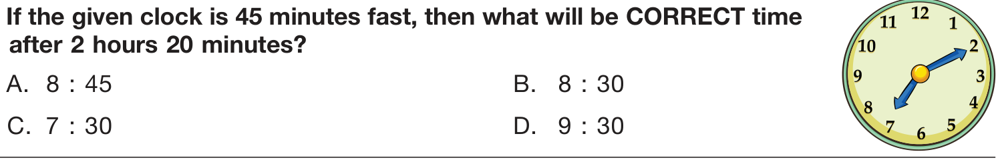
Option A
Option B
Option C
Option D
Time shown in the clock = 7 : 10
As, the clock is 45 minutes fast, so correct time is 6 : 25. Now, 2 hours 20 mins after 6 : 25 is 8 : 45.
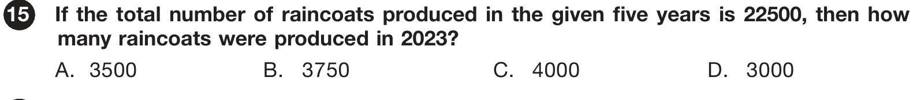
DIRECTIONS (15-16) : The given bar graph shows the number of raincoats produced by a company in the given five years. Study the given graph carefully and answer the following questions.
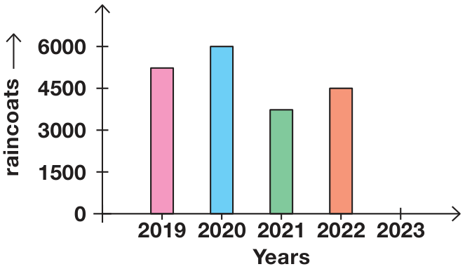
If the total number of raincoats produced in the given five years is 22500, then how many raincoats were produced in 2023?
3500
3750
4000
3000
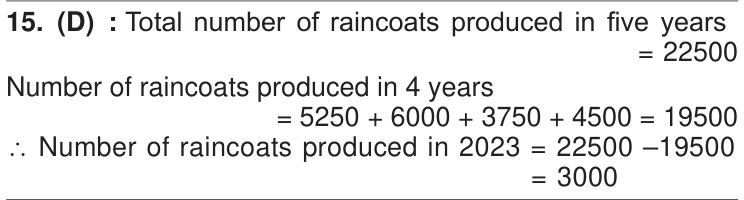
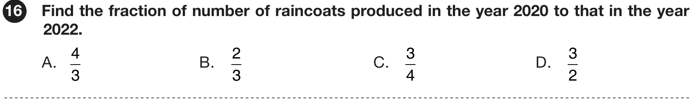
DIRECTIONS (15-16) : The given bar graph shows the number of raincoats produced by a company in the given five years. Study the given graph carefully and answer the following questions.
Find the fraction of number of raincoats produced in the year 2020 to that in the year 2022.
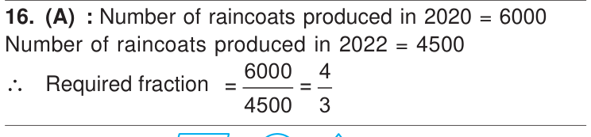
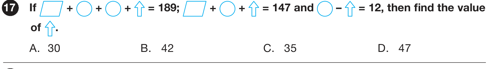
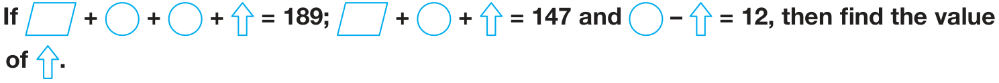
30
42
35
47
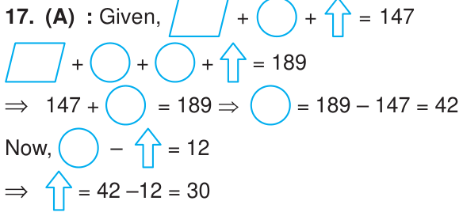
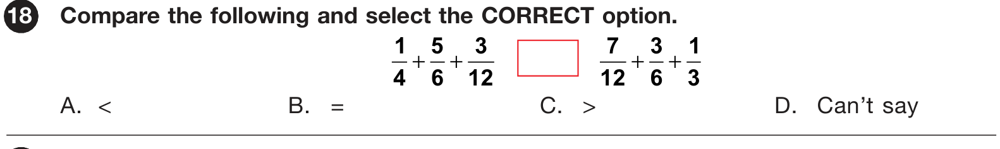
Compare the following and select the CORRECT option.
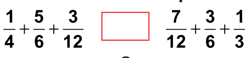
<
=
>
Can’t say
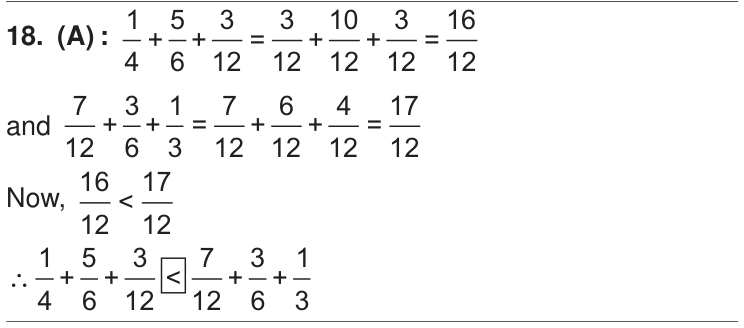
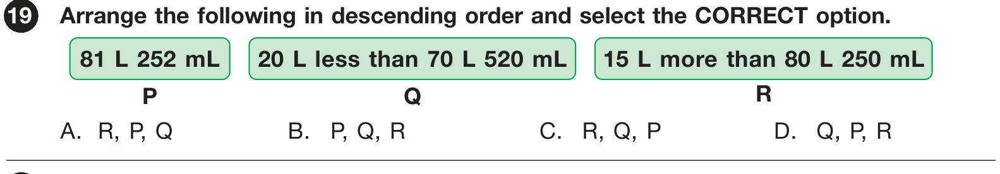
Arrange the following in descending order and select the CORRECT option.
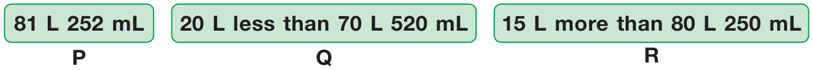
R, P, Q
P, Q, R
R, Q, P
Q, P, R
P = 81 L 252 mL
Q = 70 L 520 mL – 20 L = 50 L 520 mL
R = 80 L 250 mL + 15 L = 95 L 250 mL
As, 95 L 250 mL > 81 L 252 mL > 50 L 520 mL So, correct descending order is: R, P, Q.
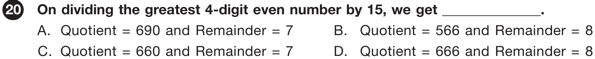
On dividing the greatest 4-digit even number by 15, we get ______________.
Quotient = 690 and Remainder = 7
Quotient = 566 and Remainder = 8
Quotient = 660 and Remainder = 7
Quotient = 666 and Remainder = 8
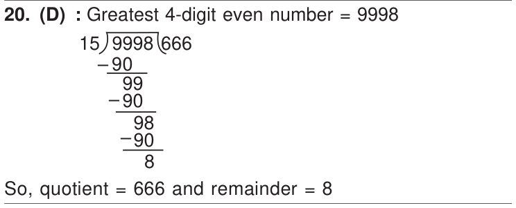
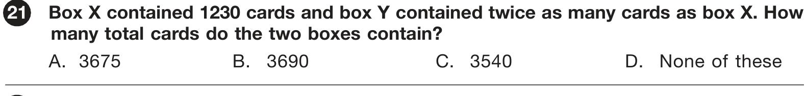
Box X contained 1230 cards and box Y contained twice as many cards as box X. How many total cards do the two boxes contain?
3675
3690
3540
None of these
Number of cards in box X = 1230
Number of cards in box Y = 2X = 2 ×1230 = 2460
\Total number of cards in both boxes = 1230 + 2460 = 3690
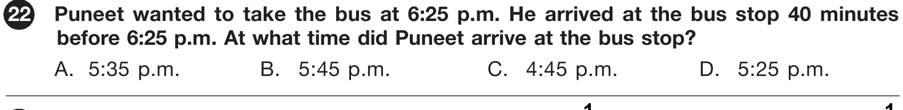
Puneet wanted to take the bus at 6:25 p.m. He arrived at the bus stop 40 minutes before 6:25 p.m. At what time did Puneet arrive at the bus stop?
5:35 p.m.
5:45 p.m.
4:45 p.m.
5:25 p.m.
Time at which Puneet reach the bus stop = 40 mins before 6 : 25 p.m. = 5 : 45 p.m.
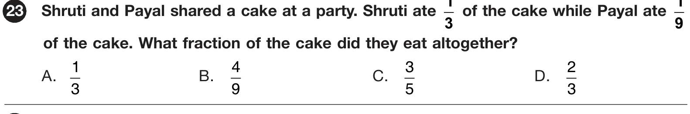
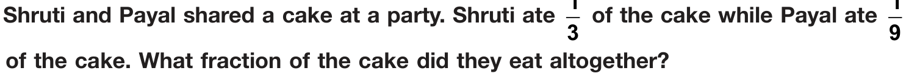
Mohit had ₹ 1950. He bought a book that costed ₹ 319, a toy that costed ₹ 280 and a pair of shoes. After buying these items, he had ₹ 780 left. How much did he pay for the pair of shoes?
₹ 571
₹ 380
₹ 619
₹ 431
Amount of money Mohit had = ₹ 1950
Amount of money left with him = ₹ 780
So, amount of money he spent = ₹ (1950 –780) = ₹ 1170 ⇒ Cost of book + Cost of toy + Cost of pair of shoes = ₹ 1170 ⇒ ₹ 319 + ₹ 280 + Cost of pair of shoes = ₹ 1170
⇒ Cost of pair of shoes = ₹ (1170 – 599) = ₹ 571
When rounded off to the nearest 1000, the population of Sikkim becomes 608000. Which of the following could be the actual population of Sikkim?
607688
607488
617695
608988
607688 when rounded off to nearest 1000 becomes 608000.
Rashi walked 4 times around a square field each side of which is 55 m long. How much total distance did she cover?
800 m
440 m
880 m
650 m
Distance covered in 1 round = Perimeter of square
= 4 × 55 m = 220 m \Distance covered in 4 rounds = 4 × 220 m = 880 m
Sumit gave 50 stickers to each of his student. He then has 20 stickers left. If he had bought 80 packets of 9 stickers each, then to how many students did he give the stickers?
10
14
12
15
Total number of stickers = 80 × 9 = 720 Number of stickers left with him = 20
So, number of stickers given to students = 720 – 20 = 700 Number of stickers given to each student = 50
So, number of students = 700 ÷ 50 = 14
The amount of money saved by Priya, Soham and Sukriti in a year was ₹ 1980, ₹ 3127 and ₹ 2950 respectively. Who saved maximum amount in that year?
Soham
Sukriti
Priya
Can’t say
As, ₹ 1980 < ₹ 2950 < ₹ 3127 So, Soham saved maximum amount.
6
5
4
2
Gargi needs to drink 30 mL each of syrup two times in a day. How many days will she take to finish 540 mL bottle of syrup?
15
9
18
20
Quantity of syrup need to drink in 1 day = 2 × 30 mL
= 60 mL Total quantity of syrup = 540 mL
So, number of days required to finish 540 mL = 540 ÷ 60 = 9
How many minimum number of squares that must be shaded so that the given figure is symmetrical?
3
4
5
None of these
1240 100
1130 30
1240 30
1130 70
Option A
Option B
Option C
Option D
F T T
F F T
T F T
T T F
Observe the given picture carefully and answer the following question.
What is the weight of 3
3 kg 420 g
1 kg 925 g
2 kg 820 g
1 kg 715 g